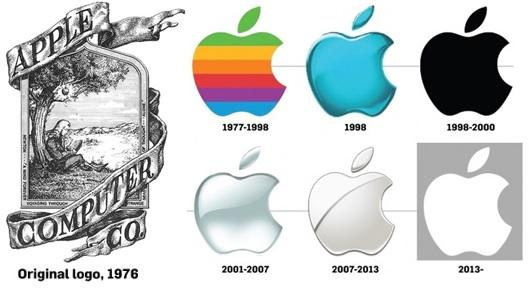
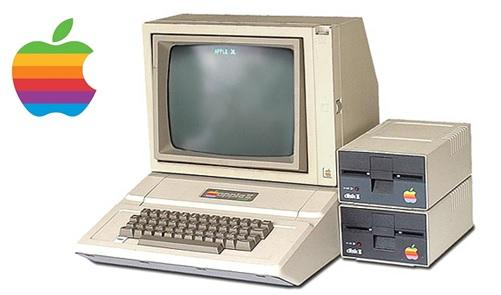
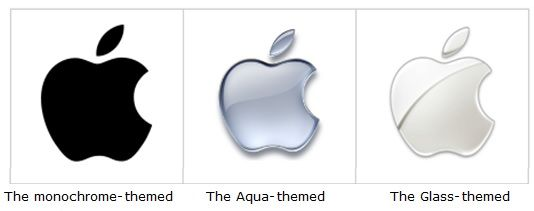
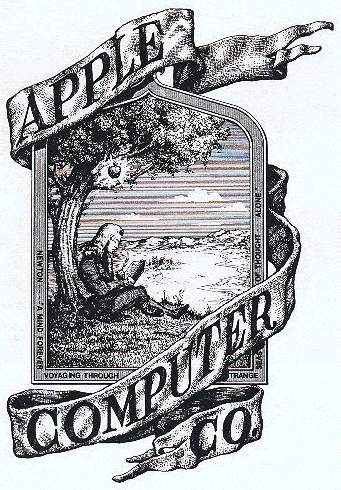
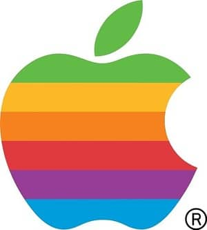
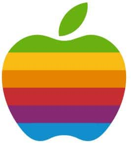
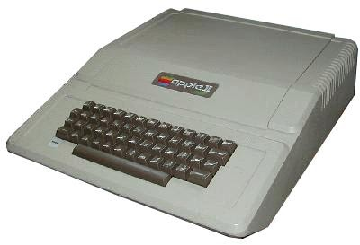

ໂລໂກ້ Apple ແມ່ນໂລໂກ້ທີ່ຄ້າຍກັບໝາກແອັບເປີ້ນ ທີ່ມີຈຸດໜຶ່ງ. ປະກົດຢູ່ໃນຜະລິດຕະພັນຕ່າງໆຂອງ Apple, ບໍ່ວ່າຈະເປັນ MacBook, iPhone ຫຼື iPod, ແຕ່ກ່ອນທີ່ມັນຈະມາຮອດໂລໂກ້ທີ່ພວກເຮົາເຫັນໃນມື້ນີ້. ໂລໂກ້ Apple ໄດ້ພັດທະນາມາຈາກຮູບໃດ? ແລະໃຜເປັນຜູ້ອອກແບບໂລໂກ້? ແລະສັນຍາລັກຂອງ Apple ຕົ້ນສະບັບມີລັກສະນະແນວໃດ?
ຕົ້ນກໍາເນີດຂອງສັນຍາລັກຂອງ Apple
ໂລໂກ້ຕົ້ນສະບັບ ຫຼືໂລໂກ້ Apple ຕົ້ນສະບັບ ມັນໄດ້ຖືກອອກແບບໃນປີ 1976 ແລະມີຮູບແຕ້ມເສັ້ນຂອງ Sir Isaac Newton ນັ່ງພາຍໃຕ້ຕົ້ນຫມາກໂປມ. ເພື່ອສະແດງເຖິງຫມາກໂປມເປັນຫມາກໄມ້ຂອງປັນຍາ, Isaac Newton ໄດ້ຄົ້ນພົບທິດສະດີຂອງແຮງໂນ້ມຖ່ວງໃນຂະນະທີ່ນັ່ງພາຍໃຕ້ຕົ້ນຫມາກໂປມແລະໄດ້ເຫັນຫມາກໂປມຕົກລົງ. ແລະຫຼັງຈາກນັ້ນສິ່ງປະດິດໃຫມ່ກໍ່ເກີດ. ຢູ່ເທິງໂລກນີ້ ນອກຈາກນັ້ນໃນເວລານັ້ນແມ່ນຍຸກຮິບປີ. ບ່ອນທີ່ໄວລຸ້ນແມ່ນ zen, ແລະ Steve Jobs ແລະຫມູ່ເພື່ອນຂອງລາວແມ່ນຜູ້ທີ່ກິນຫມາກໄມ້ເປັນອາຫານຫຼັກ. ເຂົາເຈົ້າຍັງຫຼິ້ນຢູ່ສວນໝາກໂປມເປັນປະຈຳ.

ຕໍ່ມາ Ronald Wayne ໄດ້ຖອນຕົວອອກຈາກບໍລິສັດ. Apple ໄດ້ໃຊ້ໂອກາດນີ້ໃນ ການແກ້ໄຂໂລໂກ້ Apple ອີກອັນໜຶ່ງໄດ້ຖືກຈ້າງໂດຍ Rigis McKena ເພື່ອອອກແບບໂລໂກ້ Apple ໃໝ່. ຜູ້ອອກແບບແມ່ນ Rob Janoff (Rob Janoff) ເຮັດຫນ້າທີ່ເປັນຜູ້ອໍານວຍການສິລະປະໂດຍ Steve Jobs ເພື່ອຕັດຄໍາວ່າ Computer Inc. ຍ້ອນວ່າລາວຕ້ອງການເຮັດສາຂາເອເລັກໂຕຣນິກອື່ນໆ. ບໍ່ສະເພາະແຕ່ໃນດ້ານຄອມພິວເຕີ, Steve Jobs ບອກຜູ້ອອກແບບໂລໂກ້ໃໝ່ວ່າ: ລາວຢາກໃຫ້ໂລໂກ້ໃໝ່ມີຄວາມທັນສະໄໝ, ໜ້າຮັກກວ່າ, ແລະສາມາດຮັບຮູ້ໄດ້ງ່າຍ. ໂດຍບໍ່ມີການກັດ (ໃນກໍລະນີທີ່ຄົນທໍາອິດຫນ້າຮັກເກີນໄປ), ແຕ່ Steve Jobs ເລືອກຄົນທໍາອິດ. ແລະໄດ້ເລີ່ມຕົ້ນການນໍາໃຊ້ສັນຍາລັກໃຫມ່ນີ້ໃນຕອນຕົ້ນຂອງ 1977, ເຊິ່ງໄດ້ປາກົດຢູ່ໃນ Apple II ທໍາອິດ
ເຖິງແມ່ນວ່າໂລໂກ້ຂອງບໍລິສັດສ່ວນໃຫຍ່ໃນເວລານັ້ນເປັນສອງໂຕນ, ຫຼືພຽງແຕ່ສອງສີ, Steve Jobs ເລືອກແຖບທີ່ມີຫຼາຍສີ. ເນື່ອງຈາກວ່າຫນ້າຈໍຂອງ Apple II ຍັງເປັນຫນ້າຈໍສີ. ຫຼັງຈາກນັ້ນບໍ່ດົນ, ໂລໂກ້ Apple Rainbow ຖືກຍົກເລີກ. ຫຼັງຈາກນັ້ນ, ປ່ຽນຈາກສີຮຸ້ງເປັນສີດໍາທັງຫມົດເປັນສີຂາວທັງຫມົດແລະສີດໍາທັງຫມົດ. ຫຼືເງິນແທນ ນັບຕັ້ງແຕ່ປີ 1997 Steve Jobs ກັບຄືນໄປຊ່ວຍປະຢັດບໍລິສັດຂອງຕົນເອງ, ມີການປ່ຽນແປງຫຼາຍຢ່າງ, ລວມທັງໂລໂກ້, ເພື່ອນໍາເອົາຮູບພາບໃຫມ່ຂອງ Apple ໄດ້ຮັບການຍອມຮັບຈາກປະຊາຊົນທົ່ວໄປ. ໂດຍການເອົາແຖບສີອອກເພື່ອໃຫ້ກົງກັບຜະລິດຕະພັນໃຫມ່ຂອງ Apple.

• ໂລໂກ້ແບບ monochrome. ກ່ຽວກັບການຫຸ້ມຫໍ່ແລະການໂຄສະນາໃນປີ 2003
• ໂລໂກ້ຮູບແບບ Aqua ຖືກໃຊ້ຕັ້ງແຕ່ປີ 2001- 2003 ກ່ຽວກັບການຫຸ້ມຫໍ່ ແລະການໂຄສະນາໃນ Mac OS X ລຸ້ນຕົ້ນໆ.
• ໂລໂກ້ຮູບຊົງແກ້ວແມ່ນງ່າຍດາຍແຕ່ສະຫງ່າງາມ. ມັນໄດ້ຖືກນໍາໃຊ້ຕັ້ງແຕ່ປີ 2003 ຈົນເຖິງປັດຈຸບັນ. ມັນໄດ້ຖືກນໍາສະເຫນີຄັ້ງທໍາອິດໃນ
Mac OS X ແລະ iPhone ຕົ້ນ, ຫຼັງຈາກນັ້ນໃນ iPod ຮຸ່ນທີ 5 ແລະ iPod Nano.
ເຖິງແມ່ນວ່າໂລໂກ້ຂອງບໍລິສັດສ່ວນໃຫຍ່ໃນເວລານັ້ນເປັນສອງໂຕນ, ຫຼືພຽງແຕ່ສອງສີ, Steve Jobs ເລືອກແຖບທີ່ມີຫຼາຍສີ. ເນື່ອງຈາກວ່າຫນ້າຈໍຂອງ Apple II ຍັງເປັນຫນ້າຈໍສີ. ຫຼັງຈາກນັ້ນບໍ່ດົນ, ໂລໂກ້ Apple Rainbow ຖືກຍົກເລີກ. ຫຼັງຈາກນັ້ນ, ປ່ຽນຈາກສີຮຸ້ງເປັນສີດໍາທັງຫມົດເປັນສີຂາວທັງຫມົດແລະສີດໍາທັງຫມົດ. ຫຼືເງິນແທນ ນັບຕັ້ງແຕ່ປີ 1997 Steve Jobs ກັບຄືນໄປຊ່ວຍປະຢັດບໍລິສັດຂອງຕົນເອງ, ມີການປ່ຽນແປງຫຼາຍຢ່າງ, ລວມທັງໂລໂກ້, ເພື່ອນໍາເອົາຮູບພາບໃຫມ່ຂອງ Apple ໄດ້ຮັບການຍອມຮັບຈາກປະຊາຊົນທົ່ວໄປ. ໂດຍການເອົາແຖບສີອອກເພື່ອໃຫ້ກົງກັບຜະລິດຕະພັນໃຫມ່ຂອງ Apple.
ມາຮູ້ຈັກກັບການວິວັດທະນາການຂອງໂລໂກ້ Apple ຈົນຮອດປັດຈຸບັນນີ້

The Newton Crest (1976)
ໂລໂກ້ທຳອິດຂອງ Apple. ມັນບໍ່ແມ່ນສິ່ງທີ່ພວກເຮົາເຫັນໃນມື້ນີ້, ໃນປີ 1976, Steve Jobs, Steve Wozniak ແລະ Ronald Wayne ເມື່ອບໍລິສັດກໍ່ຕັ້ງບໍລິສັດ. ທັງຫມົດຕົກລົງເຫັນດີວ່າບໍລິສັດຈະໃຊ້ຊື່ "Apple".
Ron Wayne ອອກແບບໂລໂກ້ Apple ດ້ວຍວິທີການຄລາສສິກ. ກັບຮູບຂອງ Sir Isaac Newton ນັ່ງພາຍໃຕ້ຕົ້ນໄມ້ ແລະຫມາກໂປມຫນຶ່ງກໍາລັງຈະຕົກໃສ່ຫົວຂອງລາວ ແຖວນັ້ນອ່ານວ່າ, “ນິວຕັນ… ຈິດໃຈຕະຫຼອດໄປ ເດີນໄປຕາມທະເລແຫ່ງຄວາມຄິດ… ຄົນດຽວ.”

The Rainbow Logo : ປີ 1976-1998
ບໍລິສັດ Apple ໄດ້ສ້າງຕັ້ງຂຶ້ນສອງສາມມື້ກ່ອນຫນ້ານີ້, ແລະ Ron Wayne ໄດ້ຮ້ອງຂໍໃຫ້ຖອນຕົວ. ພຽງແຕ່ສອງ Jobs ແລະ Wozniak ໄດ້ຖືກປະໄວ້, ແລະພວກເຂົາກໍ່ສ້າງບໍລິສັດຮ່ວມກັນ. ເລີ່ມມີພະນັກງານຫຼາຍຂື້ນ ຈົນກ່ວາ Apple ເປີດຕົວ Apple II, Jobs ໄດ້ໂອກາດທີ່ຈະດັດແປງໂລໂກ້ຂອງບໍລິສັດ.
- Steve Jobs ໄດ້ຈ້າງ Rigis McKena ເພື່ອຊ່ວຍອອກແບບໂລໂກ້ໃຫມ່, ໂດຍມີ Rob Janoff ເປັນຜູ້ອໍານວຍການສິລະປະ.
- Jobs ບອກ Genov ວ່າ "ຢ່າອອກແບບໃຫ້ມັນເບິ່ງງາມ" ແລະ "ຂ້ອຍຕ້ອງການໃຫ້ມັນເບິ່ງທັນສະໄຫມຫຼາຍ".
- Genov ເລີ່ມອອກແບບໂລໂກ້ Apple ດ້ວຍເງົາດຳ ແລະສີຂາວ. ມັນເປັນຫມາກໂປມ, ຫຼັງຈາກນັ້ນຄ່ອຍໆເພີ່ມຄວາມຄິດ.
- ລາວພົບວ່າຮູບຮ່າງຂອງຫມາກໂປມທີ່ຖືກອອກແບບ ຂ້ອຍບໍ່ສາມາດເບິ່ງວ່າເດັກນ້ອຍແມ່ນຫຍັງ. ບາງມຸມເບິ່ງຄືກັບຫມາກເລັ່ນ. ໃນບາງມຸມ, ມັນຄ້າຍຄືຫມາກ cherry. ມັນບໍ່ຄ້າຍຄືຫມາກໂປມ.

ຖ້າຫາກວ່າສັນຍາລັກ Apple ບໍ່ໄດ້ມີຮອຍແຕກ ມັນບໍ່ຄ້າຍຄືຫມາກໂປມ.
- Genov ຫຼັງຈາກນັ້ນໄດ້ເພີ່ມ gimmick ກັບ "cleft" ຫຼືກັດ, ເຊິ່ງທັນທີທັນໃດປາກົດຂື້ນເປັນຫມາກໂປມ. ນອກຈາກນັ້ນ, ຄໍາວ່າ ກັດ (Bite) ໃນພາສາອັງກິດແມ່ນຄໍາສັບຄ້າຍຄືກັນກັບຄໍາວ່າ Byte (ໄບ) ເຊິ່ງເປັນຄວາມຊົງຈໍາ ແລະສາມາດຫມາຍເຖິງຄອມພິວເຕີໄດ້.

Apple II ທີ່ມີໂລໂກ້ Apple Rainbow ຢູ່ເທິງມັນ.
- ດ້ວຍຮູບພາບຂອງ Apple, Steve Jobs
- ໄດ້ມີສ່ວນຮ່ວມໂດຍການໃຫ້ຄວາມຄິດທີ່ວ່າໂລໂກ້ຂອງບໍລິສັດຄວນຈະມີສີສັນ. ເພື່ອຊີ້ໃຫ້ເຫັນເຖິງຄວາມເປັນມະນຸດ (Humanize) ແລະ Apple II ແມ່ນຄອມພິວເຕີທີ່ມີຈຸດປະສົງທົ່ວໄປທໍາອິດທີ່ຈະສະແດງສີ. Genov ຫຼັງຈາກນັ້ນໄດ້ເພີ່ມແຖບສີ.
- ສີຂອງສັນຍາລັກຂອງ Apple ເລີ່ມຕົ້ນຈາກສີຂຽວ. ເພາະວ່າພວກເຂົາຕ້ອງການເປັນຕົວແທນຂອງໃບ ຫຼັງຈາກນັ້ນ, ສີແມ່ນຄ່ອຍໆ, ຄ້າຍຄືກັນກັບການ gradation rainbow, ສີຂຽວ, ສີເຫຼືອງ, ສີສົ້ມ, ສີແດງ, ສີມ່ວງ, ແລະສີຟ້າ (ຕັດອອກສີຟ້າ).
- Apple ໄດ້ເລີ່ມໃຊ້ໂລໂກ້ສີຮຸ້ງນີ້ໃນປີ 1976 ແລະມັນເປັນຄັ້ງທຳອິດທີ່ປາກົດໃນ Apple II.
The Monochrome Logo: ປີ 1998 - ປັດຈຸບັນ
ຫຼັງຈາກ 20 ປີຂອງການນໍາໃຊ້ໂລໂກ້ rainbow, Apple ໄດ້ເຖິງຈຸດສູງສຸດ. ຈົນກ່ວາຕ້ອງໄດ້ນໍາເອົາ Steve Jobs, ທີ່ຖືກໄລ່ອອກຈາກບໍລິສັດໃນປີ 1984, ກັບຄືນມາເພື່ອຊ່ວຍ ປະຢັດບໍລິສັດອີກເທື່ອຫນຶ່ງໃນປີ 1997. Jobs ໄດ້ປ່ຽນແປງຫຼາຍຢ່າງໃນ Apple ໃນວິທີການຂອງລາວ. ລວມທັງໂລໂກ້ຂອງບໍລິສັດ
ການ rebranding ຂອງ Apple ມາພ້ອມກັບແຄມເປນ Think Different, ເຊິ່ງ Jobs ພົບເຫັນຍີ່ຫໍ້ Apple ທີ່ຫຼາຍຄົນຈື່. ການວາງໂລໂກ້ໃຫ້ໂດດເດັ່ນໃນຜະລິດຕະພັນ ແລະອອກໂຄສະນາຕ່າງໆ
ນອກຈາກນັ້ນ, ໂລໂກ້ສາຍຮຸ້ງແມ່ນຍາກທີ່ຈະຈັບຄູ່ກັບຜະລິດຕະພັນເຊັ່ນ iMac ຫຼືການຂະຫຍາຍໂລໂກ້ທີ່ໃຫຍ່ຫຼາຍ (ລອງນຶກພາບຮ້ານ Apple ທີ່ມີໂລໂກ້ຮຸ້ງໃຫຍ່).
ສໍາລັບເຫດຜົນນີ້, Apple ໄດ້ຢຸດເຊົາການນໍາໃຊ້ໂລໂກ້ rainbow. ແລະປ່ຽນແທນພວກມັນດ້ວຍໂລໂກ້ສີດຳ, ສີຂາວ ຫຼືເງິນທັງໝົດ
ໂລໂກ້ Apple ກັບ notch ມັນເປັນໂລໂກ້ທີ່ໄດ້ຮັບການຍົກຍ້ອງ ທັງໃນການອອກແບບ. ແລະຄວາມເຂົ້າໃຈຂອງຍີ່ຫໍ້ ມາຮອດປັດຈຸບັນ, Apple ໄດ້ຖືກຈັດອັນດັບເປັນຍີ່ຫໍ້ທີ່ເປັນທີ່ຮູ້ຈັກທີ່ສຸດໃນໂລກເຊັ່ນດຽວກັນ.